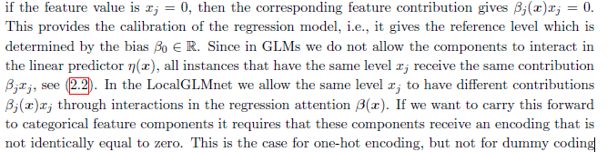
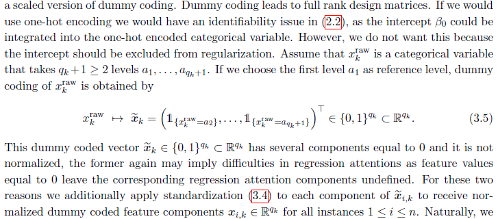

GLM的解释能力
模型简介
LocalGLMnet模型可以理解为一种特殊的GLM，其回归系数由神经网络训练，且与特征 \(\pmb x\) 相关，即 \(\beta_j=\beta_j(\pmb x)\) 。
严格讲，LocalGLMnet不再是线性模型，因其失掉了“参数线性”。其结构可表示为：
\[ \pmb x\rightarrow g(\mu(\pmb x))=\beta_0+\langle\pmb\beta(\pmb x),x\rangle \]
作为对比，GLM的结构可表示为： \(\pmb x\rightarrow g(\mu(\pmb x))=\beta_0+\langle\pmb\beta,x\rangle\)
上述结构是一个带有跳跃连接的特殊的DNN。
- 首先，特征 \(\pmb x\) 通过 \(d\) 层全连接网络得到 \(\pmb \beta(\pmb x)\in \mathbb R^q\) ;
- 然后，特征 \(\pmb x\) 跳过所有全连接层直接连到输出层，与 \(\pmb \beta(\pmb x)\) 作点乘。
自然地， \(\pmb \beta(\pmb x)\) 就可以看作 \(\pmb x\) 的“回归系数”，本文称之为回归注意力1（regression attention）。
.footnote[ [1] 若参数与特征 \(x\) 不相关，称 \(\beta\) 回归系数；若参数与特征 \(x\) 相关，称 \(\beta(\pmb x)\) 回归注意力。] —
library(keras)## Warning: 程辑包'keras'是用R版本4.0.5 来建造的Design <- layer_input(shape=8 , dtype='float32', name='Design')
Attention <- Design %>%
layer_dense(units=15, activation='tanh', name='FNLayer1') %>%
layer_dense(units=10, activation='tanh', name='FNLayer2') %>%
layer_dense(units=8, activation='linear', name='Attention')
Response <- list(Design, Attention) %>%
layer_dot(axes=1, name='LocalGlm') %>%
layer_dense(units=1, activation='exponential', name='Response')
keras_model(inputs=c(Design), outputs=c(Response))## Model: "model"
## ____________________________________________________________
## Layer (type) Output Shape Param Connected to
## ============================================================
## Design (InputLayer [(None, 8)] 0
## ____________________________________________________________
## FNLayer1 (Dense) (None, 15) 135 Design[0][0]
## ____________________________________________________________
## FNLayer2 (Dense) (None, 10) 160 FNLayer1[0][0]
## ____________________________________________________________
## Attention (Dense) (None, 8) 88 FNLayer2[0][0]
## ____________________________________________________________
## LocalGlm (Dot) (None, 1) 0 Design[0][0]
## Attention[0][0]
## ____________________________________________________________
## Response (Dense) (None, 1) 2 LocalGlm[0][0]
## ============================================================
## Total params: 385
## Trainable params: 385
## Non-trainable params: 0
## ____________________________________________________________正则化
- 弹性网（Elastic Net）正则
\[\underset{W,\beta_0}{\arg\min}\frac{1}{n}\sum_{i=1}^nL\big(Y_i,\mu_{W,\beta_0}(\pmb x_i)\big)+\eta\big((1-\alpha)||\beta(\pmb x_i)||_2^2+\alpha||\beta(\pmb x_i)||_1\big)\]
其中 \(\eta>0\wedge\alpha\in[0,1]\) 。
\(\alpha=0\) 时退化为岭正则， \(\underset{W,\beta_0}{\arg\min}\frac{1}{n}\sum_{i=1}^nL\big(Y_i,\mu_{W,\beta_0}(\pmb x_i)\big)+\eta||\beta(\pmb x_i)||_2^2\)
\(\alpha=1\) 时退化为LASSO正则， \(\underset{W,\beta_0}{\arg\min}\frac{1}{n}\sum_{i=1}^nL\big(Y_i,\mu_{W,\beta_0}(\pmb x_i)\big)+\eta||\beta(\pmb x_i)||_1\) 。
–
- 组LASSO正则
\[\underset{W,\beta_0}{\arg\min}\frac{1}{n}\sum_{i=1}^nL\big(Y_i,\mu_{W,\beta_0}(\pmb x_i)\big)+\sum_{k=1}^K\eta_k||\beta_k(\pmb x_i)||_2\]
LassoNet
.pull-left[ \[\pmb x\rightarrow \pmb\beta^T\pmb x+\Psi_W(\pmb x)\\\underset{W,\pmb \beta}{\arg\min}\frac{1}{n}\sum_{i=1}^nL\big(Y_i,\mu_{W,\pmb \beta}(\pmb x_i)\big)+\eta||\pmb \beta||_1\\subject\ to\ ||W_j^{(1)}||_\infty\le M|\beta_j|,\ j=1,...,q\]]
.pull-right[Figure 4: LassoNet模型结构
]
–
| Lasso-LocalGLMnet | LassoNet | |
|---|---|---|
| 正则化 | 激活正则 | 权重正则 |
| 参数 | \(\eta\) | \(\eta,M\) |
| 估参方法 | 梯度下降 | 近端梯度下降 (proximal gradient descent) |
| 方法有效性 | 较强 | 受非线性效应及变量间交互效应的影响较大 |
| 拓展性 | 强 | 弱 |
模拟数据分析
–
生成标准正态变量 \(x_1,…,x_8\) ，其中 \(corr(x_2,x_8)=0.5\) ，其余变量间均不相关。
数据量为20万，其中训练集为10万，测试集为10万。回归函数形式为：
–
\[ \mu(x)=\frac{1}{2}x_1-\frac{1}{4}x_2^2+\frac{1}{2}|x_3|\sin(2x_3)+\frac{1}{2}x_4 x_5+\frac{1}{8} x_5^2x_6 \] \[ y\sim \rm N\big(\mu(x),1\big) \] –
| 训练集MSE | 测试集MSE | |
|---|---|---|
| 真实模型 | 1.0023 | 0.9955 |
| 空模型 | 1.7907 | 1.7916 |
| GLM | 1.5241 | 1.5274 |
| LocalGLMnet | 1.0023 | 1.0047 |
模拟数据分析
\(\mu(x)=\frac{1}{2}x_1-\frac{1}{4}x_2^2+\frac{1}{2}|x_3|\sin(2x_3)+\frac{1}{2}x_4 x_5+\frac{1}{8} x_5^2x_6\)
.pull-left[

(#fig:regression attention)各变量的回归注意力
]
.pull-right[

(#fig:feature contribution)各变量的特征贡献
]
模拟数据分析
\(\mu(x)=\frac{1}{2}x_1-\frac{1}{4}x_2^2+\frac{1}{2}|x_3|\sin(2x_3)+\frac{1}{2}x_4 x_5+\frac{1}{8} x_5^2x_6\)

Figure 5: 各变量间的交互效应
模拟数据分析
\(\mu(x)=\frac{1}{2}x_1-\frac{1}{4}x_2^2+\frac{1}{2}|x_3|\sin(2x_3)+\frac{1}{2}x_4 x_5+\frac{1}{8} x_5^2x_6\)
变量重要性: \(VI_j(\eta)=\frac{1}{n}∑_{i=1}^n|\hat{\beta}_j^{(\eta)}(\pmb x_i)|\)

(#fig:variable importance)施加LASSO正则的变量重要性
分类变量处理
- LocalGLMnet：one-hot encoding（P20）

- Lasso-LocalGLMnet：scaled dummy-encoding（P8）

画图试验
plot(1:10)